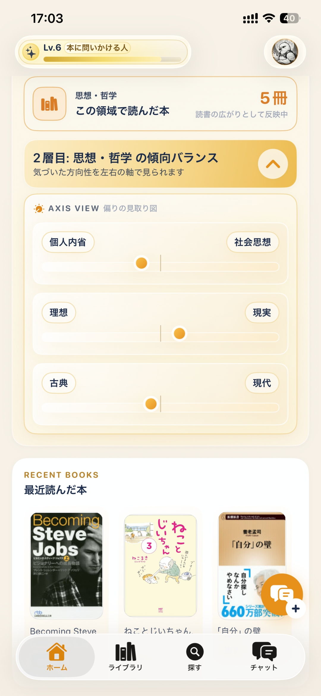
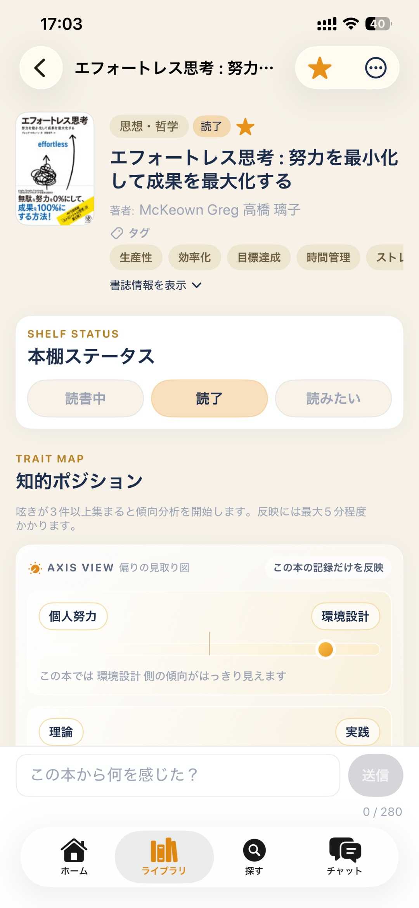
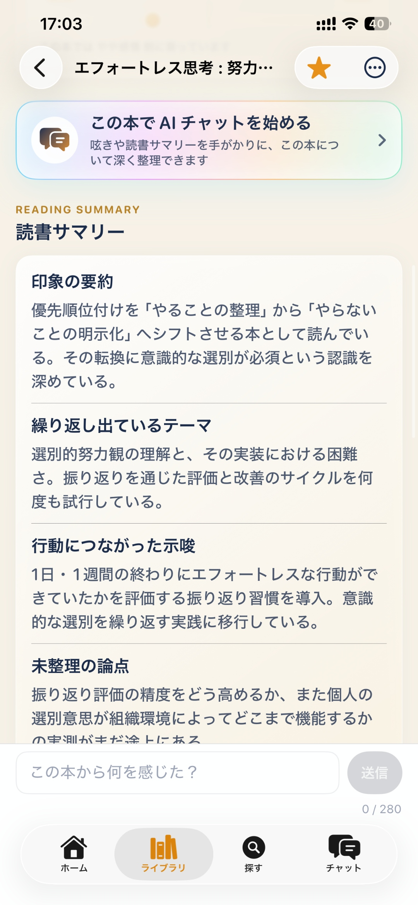
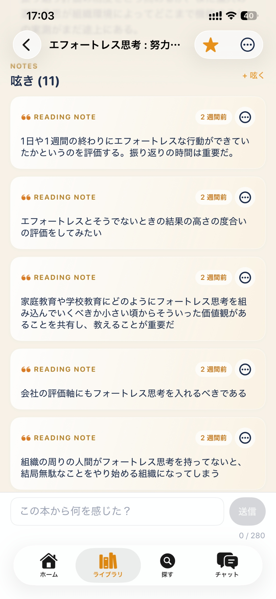

読書の広がりが地図になる。
思想・哲学、社会・ビジネス、文学、科学など領域ごとの読書バランスを可視化。 気になる領域をタップすると、傾向バランスを軸で見られます。
Book Compass は、読書記録を整理しながら、関心や価値観の変化を可視化するサービスです。 DoubleHub につながると、その地図は「何を大事にしているか」の輪郭になります。






思想・哲学、社会・ビジネス、文学、科学など領域ごとの読書バランスを可視化。 気になる領域をタップすると、傾向バランスを軸で見られます。
読書中のつぶやきを保存するだけでなく、AIが「印象の要約」「繰り返し出ているテーマ」 「行動につながった示唆」「未整理の論点」に整理。後から見返したとき、自分の思考の流れが追いやすい状態に。
過去の呟きや読書傾向をもとに、「深める」と「広げる」の2軸で次の一冊を提案。 なぜこの本が自分に合うのか、納得できる理由が見えるレコメンド。
Book Compass のチャットは「何でも答えてくれるAI先生」ではありません。 あなたの読書記録を根拠にして、一緒に整理する読書パートナーです。 上から教え込まない、それっぽいことを断定しない。自分の読書記録を起点に、考えを深める壁打ち相手。
「あなたが以前こういうことを気にしていたから、今回もここが引っかかっているのかもしれない」 「この本で残った問いは、前に読んだ別の本の気づきとつながるかもしれない」 そういうふうに返せることを目指しています。
読書の記録、メモ整理、興味テーマの可視化、理由つきの本の提案。
関心の変化、思考のクセ、心が動くトピック。構造化されたインサイトとして連携。
次に読むべき一冊や、いまの課題に合う知的インプットの提案。他の生活データと合わせた総合的な判断。